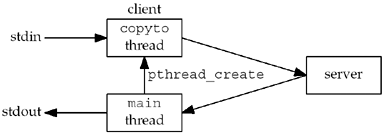

| [ Team LiB ] |
|
26.3 str_cli Function Using ThreadsOur first example using threads is to recode the str_cli function from Figure 16.10, which uses fork, to use threads. Recall that we have provided numerous other versions of this function: The original in Figure 5.5 used a stop-and-wait protocol, which we showed was far from optimal for batch input; Figure 6.13 used blocking I/O and the select function; and the version starting with Figure 16.3 used nonblocking I/O. Figure 26.1 shows the design of our threads version. Figure 26.1. Recoding str_cli to use threads. Figure 26.2 shows the str_cli function using threads. unpthread.h header1 This is the first time we have encountered the unpthread.h header. It includes our normal unp.h header, followed by the POSIX <pthread.h> header, and then defines the function prototypes for our wrapper versions of the pthread_XXX functions (Section 1.4), which all begin with pthread_. Save arguments in externals10–11 The thread that we are about to create needs the values of the two arguments to str_cli: fp, the standard I/O FILE pointer for the input file, and sockfd, the TCP socket connected to the server. For simplicity, we store these two values in external variables. An alternative technique is to put the two values into a structure and then pass a pointer to the structure as the argument to the thread we are about to create. Figure 26.2 str_cli function using threads.threads/strclithread.c
1 #include "unpthread.h"
2 void *copyto (void *);
3 static int sockfd; /* global for both threads to access */
4 static FILE *fp;
5 void
6 str_cli(FILE *fp_arg, int sockfd_arg)
7 {
8 char recvline[MAXLINE];
9 pthread_t tid;
10 sockfd = sockfd_arg; /* copy arguments to externals */
11 fp = fp_arg;
12 Pthread_create(&tid, NULL, copyto, NULL);
13 while (Readline(sockfd, recvline, MAXLINE) > 0)
14 Fputs(recvline, stdout);
15 }
16 void *
17 copyto(void *arg)
18 {
19 char sendline[MAXLINE];
20 while (Fgets(sendline, MAXLINE, fp) ! = NULL)
21 Writen(sockfd, sendline, strlen(sendline));
22 Shutdown(sockfd, SHUT_WR); /* EOF on stdin, send FIN */
23 return (NULL);
24 /* return (i.e., thread terminates) when EOF on stdin */
25 }
Create new thread12 The thread is created and the new thread ID is saved in tid. The function executed by the new thread is copyto. No arguments are passed to the thread. Main thread loop: copy socket to standard output13–14 The main thread calls readline and fputs, copying from the socket to the standard output. Terminate15 When the str_cli function returns, the main function terminates by calling exit (Section 5.4). When this happens, all threads in the process are terminated. Normally, the copyto thread will have already terminated by the time the server's main function completes. But in the case where the server terminates prematurely (Section 5.12), calling exit when the server's main function completes will terminate the copyto thread, which is what we want. copyto thread16–25 This thread just copies from standard input to the socket. When it reads an EOF on standard input, a FIN is sent across the socket by shutdown and the thread returns. The return from this function (which started the thread) terminates the thread. At the end of Section 16.2, we provided measurements for the five different implementation techniques that we have used with our str_cli function. The threads version we just presented took 8.5 seconds, which is slightly faster than the version using fork (which we expect), but slower than the nonblocking I/O version. Nevertheless, comparing the complexity of the nonblocking I/O version (Section 16.2) versus the simplicity of the threads version, we still recommend using threads instead of nonblocking I/O. |
| [ Team LiB ] |
|